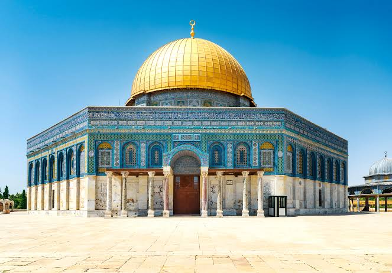
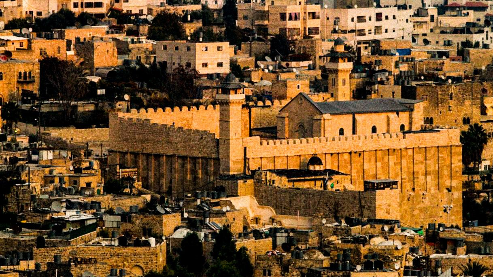
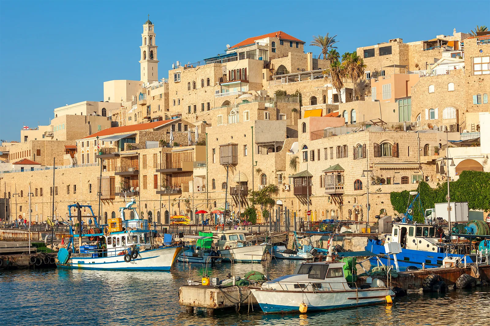
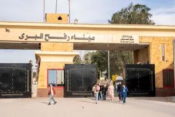
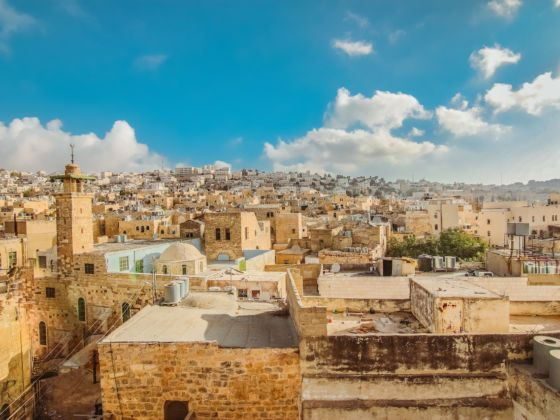

Introduction to Palestine
Palestine is a geographic and political region in West Asia along the eastern Mediterranean Sea, encompassing the West Bank (including East Jerusalem) and the Gaza Strip
Palestinian Governorates

Quds
Location: Central West Bank, including East Jerusalem.
Details: It holds profound religious, cultural, and political significance for Palestinians as their intended capital. Parts of it are heavily impacted by Israeli occupation policies and separation barriers.

Khaleel
Location: Southern West Bank.
Details: It is the largest governorate in the West Bank by both land area and population. It is a major agricultural and commercial hub known for its ancient Old City, vineyards, and limestone production.

Yafa
Location: Historically on the Mediterranean coast.
Details: Jaffa (Yafa) is not a modern governorate under the Palestinian Authority administration; rather, it is a historic port city that was incorporated into the Israeli municipality of Tel Aviv-Yafo following the 1948 war.

Khan Younus
Location: Southern Gaza Strip.
Details: It is one of the five official governorates in Gaza, functioning as a major urban and agricultural center that has hosted large refugee populations and sustained severe infrastructure damage during recent conflicts.

Rafah
Location: Far southern edge of the Gaza Strip, bordering Egypt.
Details: Serving as Gaza's southernmost gateway, the Rafah governorate is historically a vital transit point and home to extensive refugee encampments, experiencing massive humanitarian crises and structural destruction.

Gaza
Location: Northern-central part of the Gaza Strip.
Details: It is the most populous governorate in the Gaza Strip. It serves as the historic, economic, and cultural heart of the coastal territory, though it has faced catastrophic devastation of civilian areas and services.